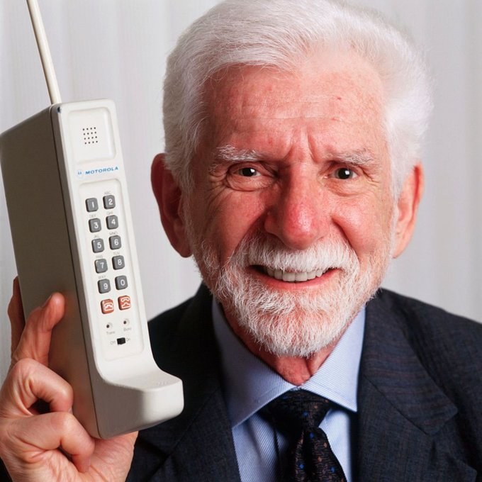
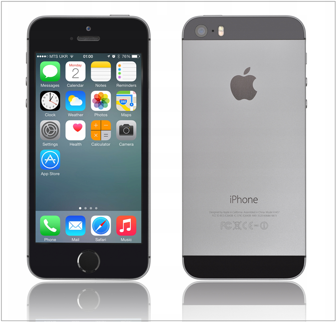

In the 1980s and 1990s, mobile phone technology advanced with the introduction of 1G and 2G networks. Analog systems transitioned to digital, improving voice clarity and enabling services like SMS. Devices became smaller, cheaper, and more user-friendly, transforming phones from niche business tools into everyday communication devices. Companies like Nokia and Motorola dominated this period, with iconic models such as the Nokia 5110 capturing the public’s imagination. The era also saw significant growth in mobile network coverage, connecting more people worldwide. This progress marked the beginning of mobile phones becoming indispensable in daily life.
The mid-20th century saw groundbreaking advancements with the development of electronic computers like the ENIAC in 1945. This machine, designed for high-speed calculations, was enormous and power-hungry but far more efficient than mechanical predecessors. The invention of the transistor in the 1950s revolutionized computers, making them smaller, faster, and more reliable. Programming languages like FORTRAN and COBOL enabled versatile applications, and computer systems became integral to industries such as finance and research. These innovations not only enhanced computational efficiency but also democratized access to technology, setting the foundation for personal computing.
By the 2000s, the arrival of 3G networks and smartphones revolutionized the industry. These devices combined internet access, multimedia capabilities, and user-friendly interfaces. Apple's iPhone, launched in 2007, set a new standard for mobile technology with its sleek design and app ecosystem. Android quickly followed, providing a competitive and customizable alternative. Today, with the advent of 4G and 5G networks, mobile phones continue to evolve, shaping global communication and innovation. The introduction of apps created new opportunities for businesses and developers. Today, with the advent of 4G and 5G networks, mobile phones continue to evolve, shaping global communication and innovation while becoming more integral to modern lifestyles.
